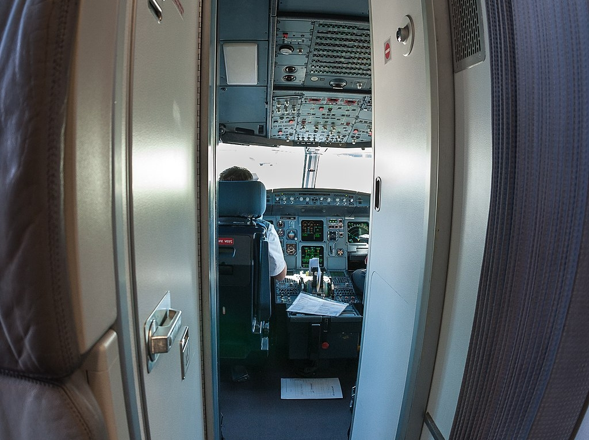

ETH702 Hijacking
February 17th, 2014
Ethiopian Airlines Flight 702
From Addis Ababa
To Milano
outline
사건명
에티오피아 항공 702편 납치 사건
납치 항공편
에티오피아 항공 702편
출발지
에티오피아 아디스아바바
목적지
이탈리아 밀라노
사건 발생지
수단 상공, 스위스 제네바
범인
부기장
info
2014년 2월 17일, 에티오피아 아디스아바바 국제 공항에서 이탈리아 로마를 경유해 이탈리아 밀라노 말펜사 공항으로 가던 에티오피아 항공 702편이 부기장에 의해 납치된 사건이다. 부기장은 기장이 잠시 화장실에 간 틈을 타 조종실

9.11 테러 이후 외부에서 조종실 문을 강제로 열지 못한다.
을 잠그고 기체 통제권을 장악했다. 이후 비행기 기수를 스위스 제네바로 돌렸으며 에티오피아에서 신변의 위협을 느껴 스위스로 망명하려고 했다. 이후 항공기는 제네바 공항
연료 주입을 한다는 목적으로 제네바 공항으로 이동했다.
에 도착한 후 비행기 납치 사실을 자백했다. 그렇게 조종실에서 스스로 체포되었다. 이 사건은 9.11 테러 이후 거의 불가능해진 특정 승객이 기체를 점령한 전통적인 여객기 하이재킹이 아니라 내부 조종사에 의한 통제권 탈취라는 특이한 케이스이다.

9.11 테러 이후 외부에서 조종실 문을 강제로 열지 못한다.
연료 주입을 한다는 목적으로 제네바 공항으로 이동했다.